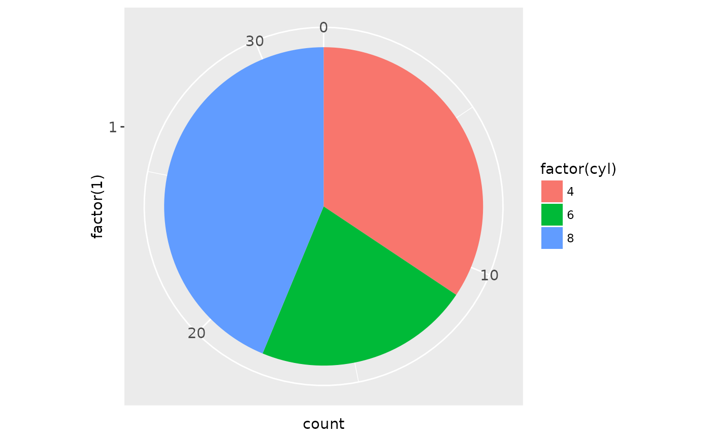

The polar coordinate system is most commonly used for pie charts, which are a stacked bar chart in polar coordinates.
Examples
# NOTE: Use these plots with caution - polar coordinates has
# major perceptual problems. The main point of these examples is
# to demonstrate how these common plots can be described in the
# grammar. Use with EXTREME caution.
#' # A pie chart = stacked bar chart + polar coordinates
pie <- ggplot(mtcars, aes(x = factor(1), fill = factor(cyl))) +
geom_bar(width = 1)
pie + coord_polar(theta = "y")

# \donttest{
# A coxcomb plot = bar chart + polar coordinates
cxc <- ggplot(mtcars, aes(x = factor(cyl))) +
geom_bar(width = 1, colour = "black")
cxc + coord_polar()
# A new type of plot?
cxc + coord_polar(theta = "y")
# The bullseye chart
pie + coord_polar()
# Hadley's favourite pie chart
df <- data.frame(
variable = c("does not resemble", "resembles"),
value = c(20, 80)
)
ggplot(df, aes(x = "", y = value, fill = variable)) +
geom_bar(width = 1, stat = "identity") +
scale_fill_manual(values = c("red", "yellow")) +
coord_polar("y", start = pi / 3) +
labs(title = "Pac man")
# Windrose + doughnut plot
if (require("ggplot2movies")) {
movies$rrating <- cut_interval(movies$rating, length = 1)
movies$budgetq <- cut_number(movies$budget, 4)
doh <- ggplot(movies, aes(x = rrating, fill = budgetq))
# Wind rose
doh + geom_bar(width = 1) + coord_polar()
# Race track plot
doh + geom_bar(width = 0.9, position = "fill") + coord_polar(theta = "y")
}
#> Loading required package: ggplot2movies
# }